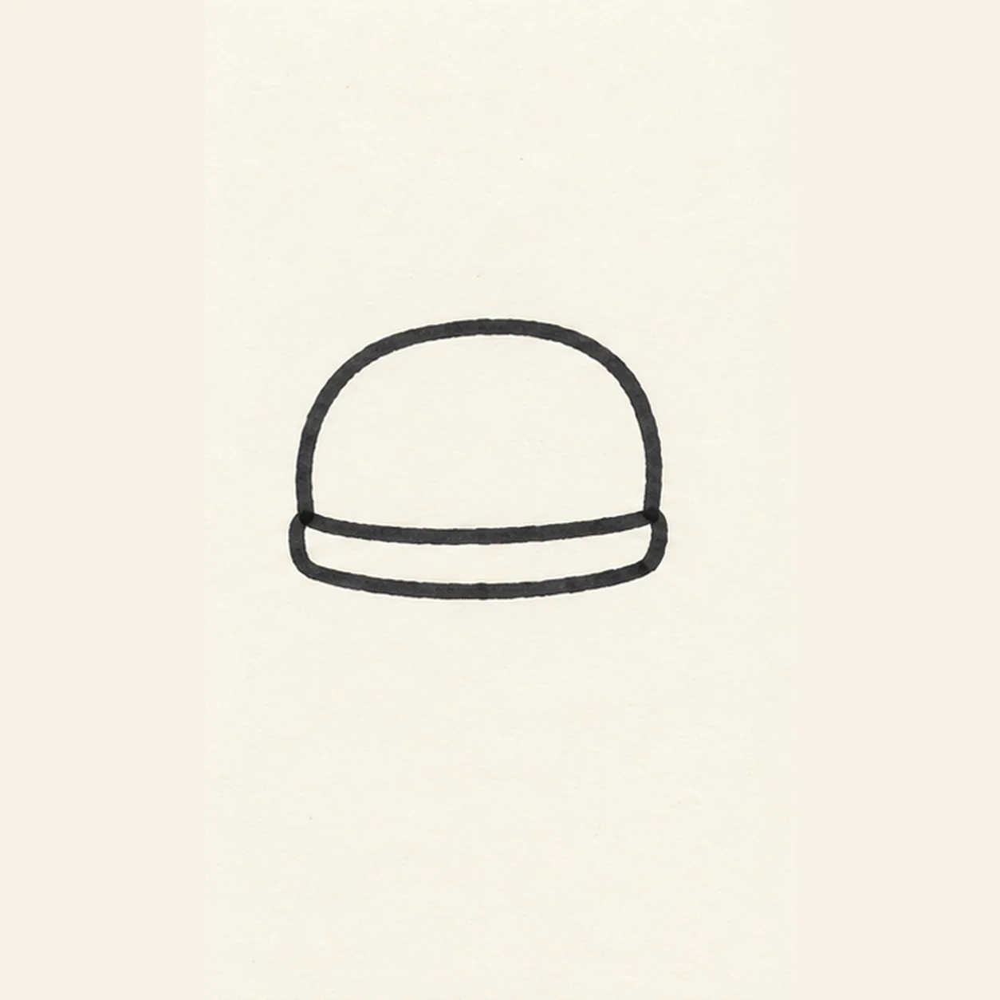
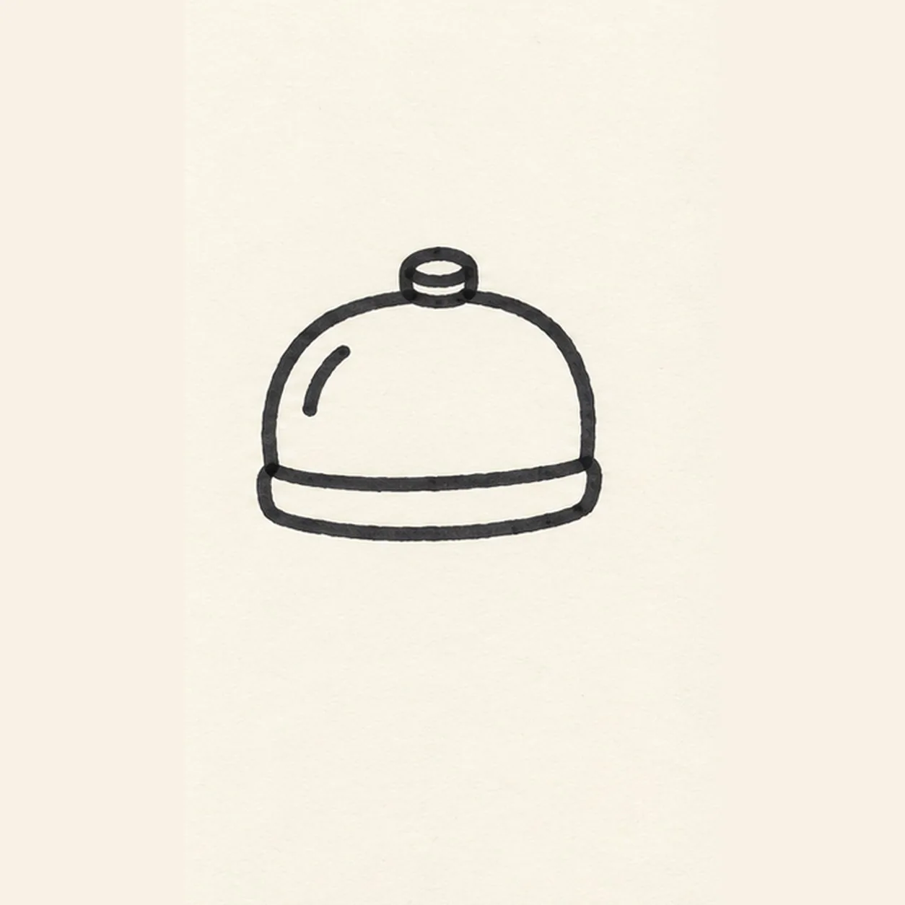
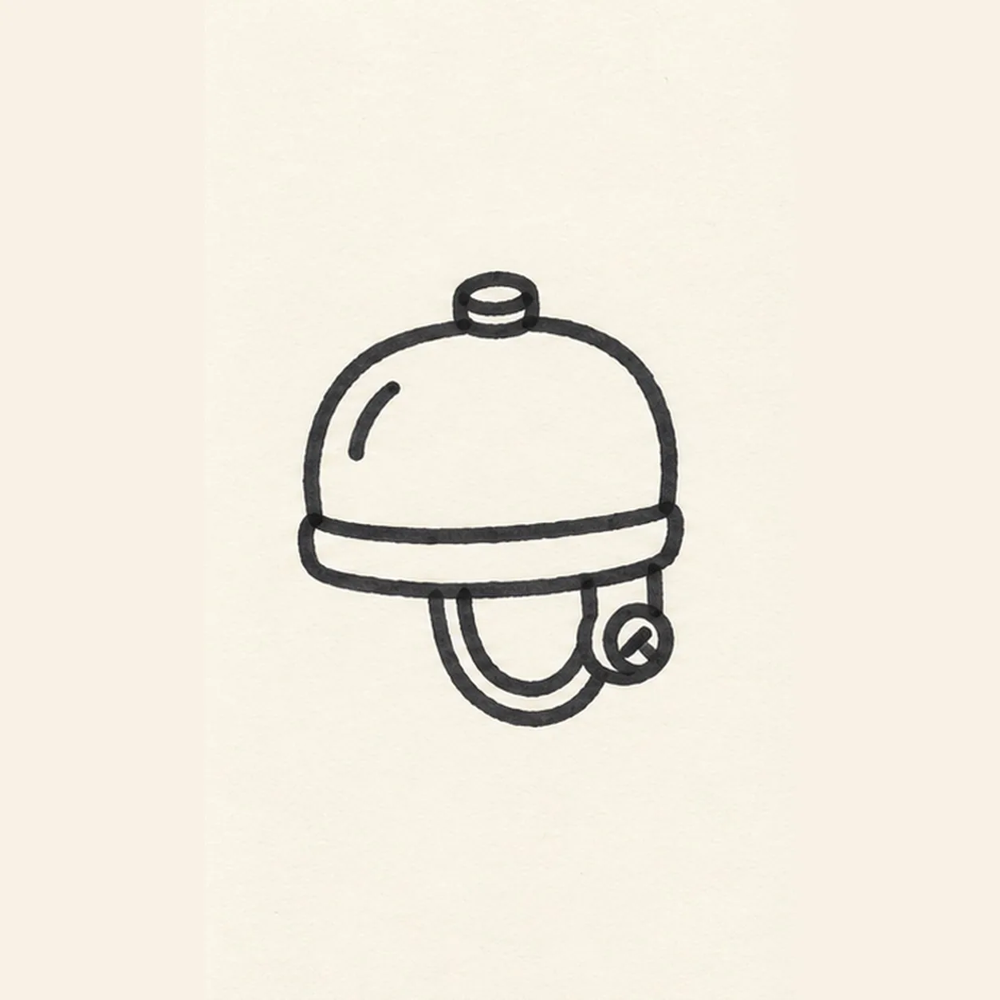
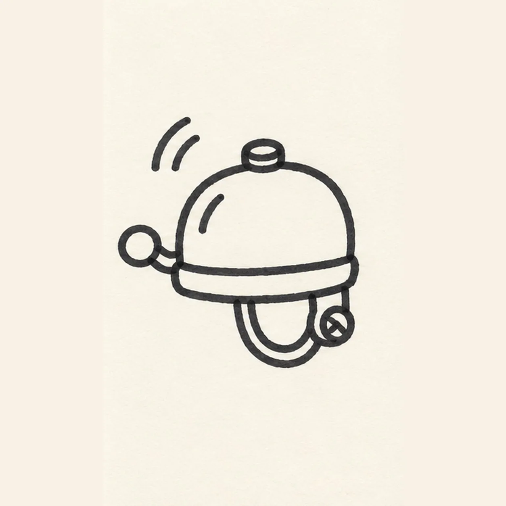

Felt-tip marker mode
Let's draw a bicycle bell
Treat this as one playful practice round: sketch the idea loosely, simplify the shapes, then commit with confident marker outlines and bright fills.
-
01

Shape the bell
Draw a squat rounded dome with a flat lower edge, then add a narrow band directly beneath it. Keep the left and right ends aligned.
Marker tip: Make the dome roughly twice as wide as it is tall; keep the band narrow.
-
02

Fit the cap and shine
Place a small round button on top center of the dome. Draw one short curved shine stroke inside the upper-left dome, well away from the outer outline.
Marker tip: Leave the upper-left shine stroke open so a white paper glint survives the color fill.
-
03

Mount the clamp
Under the right half of the band, draw a U-shaped handlebar clamp with a small screw circle on its outer side. Leave the left band edge free for the lever.
Marker tip: Keep the U under the band and its screw on the right, clear of the dome.
-
04

Add the lever and ring
From the left band edge, draw a short bent thumb lever pointing up-left. Put two short curved sound ticks outside the dome at upper left.
Marker tip: Connect the lever at the left band edge, and count only two ringing ticks.
-
05
Color the bicycle bell
Fill the existing dome coral, the narrow band and clamp teal, and the top button and lever yellow. Keep the sound ticks black and leave small paper highlights inside the dome.
Marker tip: Let the black outline dry, then fill with short marker passes that leave some paper texture visible.